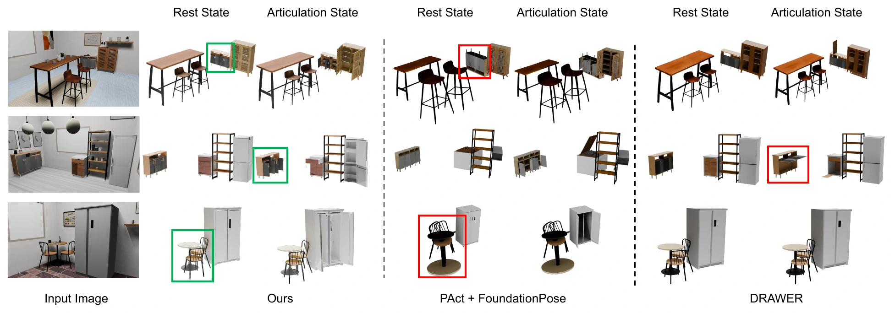

Table 1. Comparison with interactive scene reconstruction baselines.
| Method | Static reconstruction | Scene interactability | Object usability | ||||||
|---|---|---|---|---|---|---|---|---|---|
| RS-IoU ↑ | RS-CD ↓ | AS-IoU ↑ | AS-CD ↓ | AS-CLIP ↑ | AS-PSNR ↑ | Use-L ↑ | Use-M ↑ | Use-S ↑ | |
| SAM 3D | 0.400 | 0.106 | 0.396 | 0.116 | 0.941 | 24.55 | 0 | 0 | 0 |
| DRAWER | 0.411 | 0.107 | 0.385 | 0.116 | 0.938 | 24.51 | 0 | 0 | 0 |
| SAM 3D + Particulate | 0.338 | 0.119 | 0.293 | 0.133 | 0.934 | 23.99 | 0 | 0 | 0 |
| PAct + FoundationPose | 0.103 | 0.260 | 0.108 | 0.269 | 0.885 | 21.32 | 45.45% | 18.18% | 0 |
| RISE + FoundationPose | 0.132 | 0.339 | 0.136 | 0.343 | 0.893 | 24.58 | 80% | 70% | 20% |
| RISE | 0.416 | 0.075 | 0.421 | 0.084 | 0.937 | 26.21 | 80% | 70% | 20% |